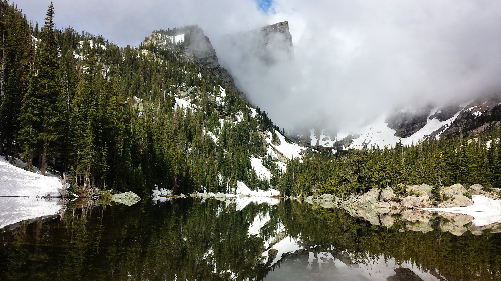
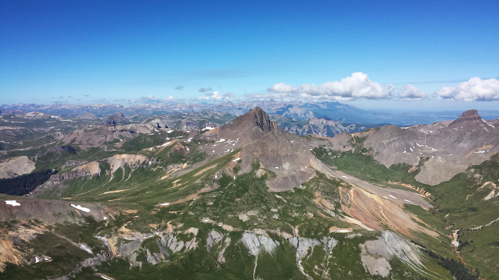
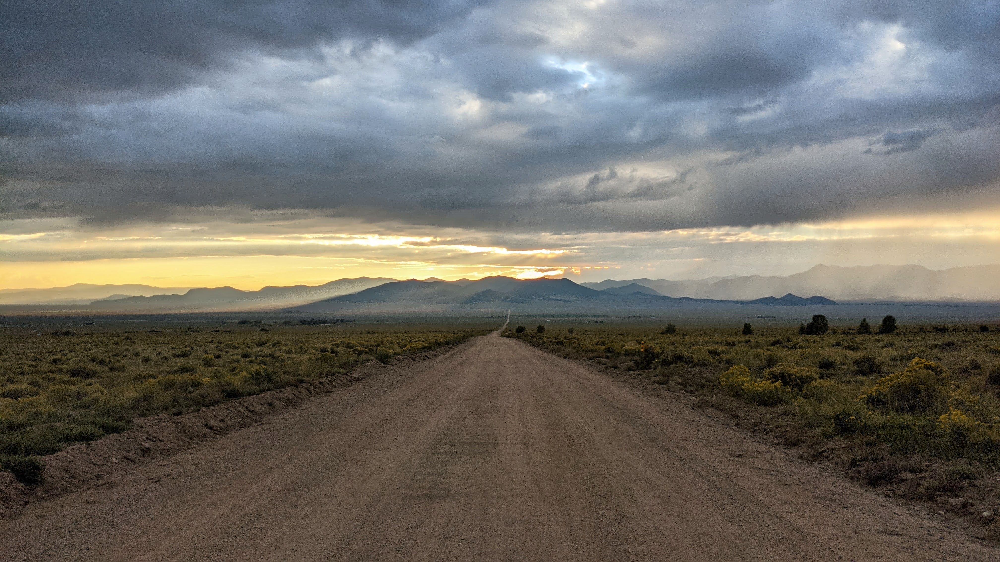
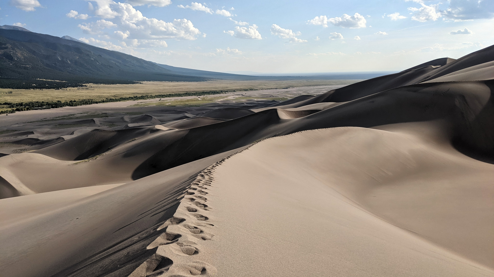
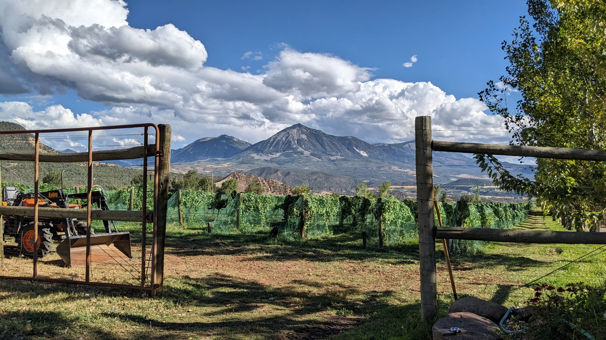
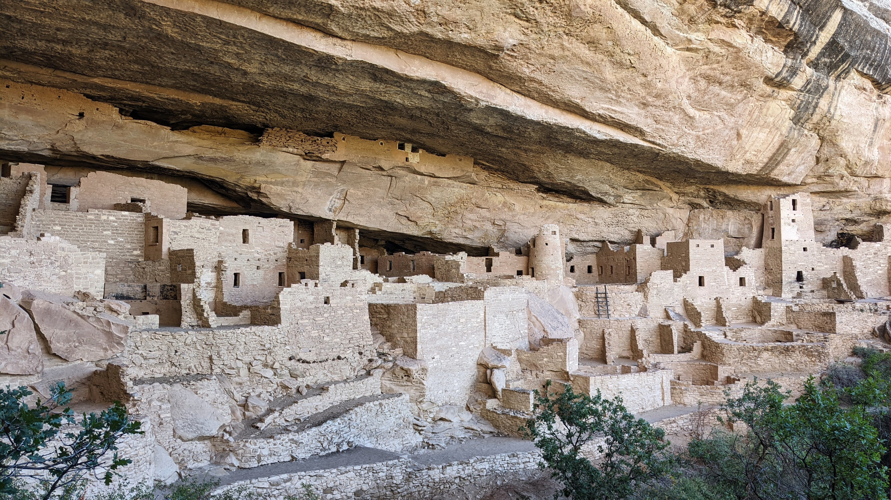
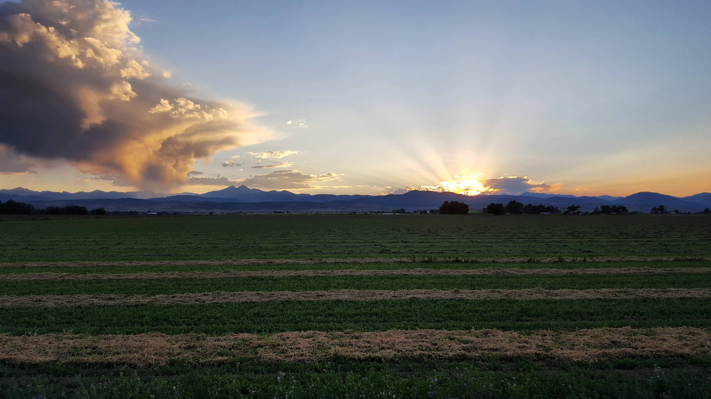

Cataratas del Velo de Novia en Telluride
Aquí están unas de mis fotos favoritas que he sacado en los últimos años (o sea hasta que he tenido un celular con buena cámera). La foto de arriba es del Lago de Isla en las montañas de San Juan.

Lago de Sueño, parque nacional de las Montañas Rocosas

Vista desde la cima de Pico Uncompahgre

Vista desde la calle para las termas de Vista del Valle

Parque nacional de las Grandes Dunas de Arena

Vista de monte Lamborn desde un viñedo en Paonia

Parque nacional de Mesa Verde
Cataratas del Velo de Novia en Telluride

Vista desde el fin de la calle dónde crecía